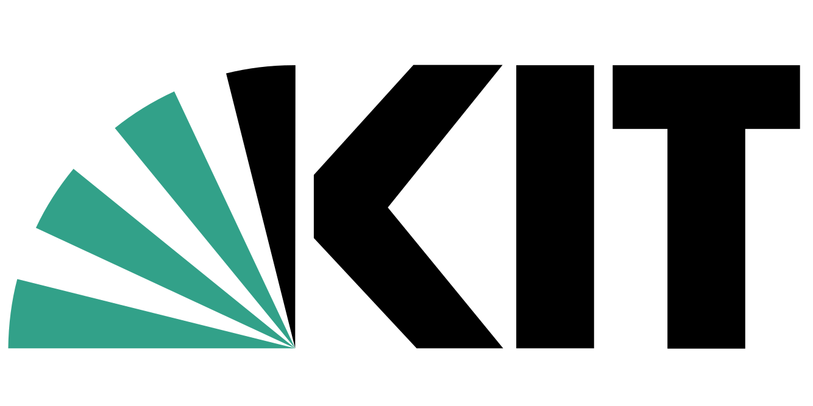
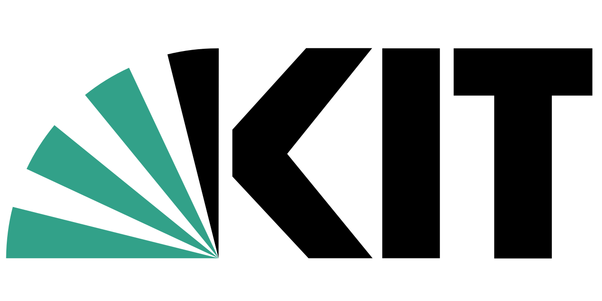

NOMAD
An open and free service for the community that lets you
manage, share, and publish data.
-
Privately manage a limited number of uploads
-
Publish data to the whole community
-
We archive your data and give you a DOI
-
Access all published data
-
You do not need to install or host anything
NOMAD Oasis
Your resources, your rules, your NOMAD.
Manage data and collaborate locally.
-
Runs on your own resources with your rules
-
Control access and collaborate
-
Manage all data in your group at all stages
-
Publish to NOMAD from your Oasis soon
-
Adapt your Oasis for your data
 
